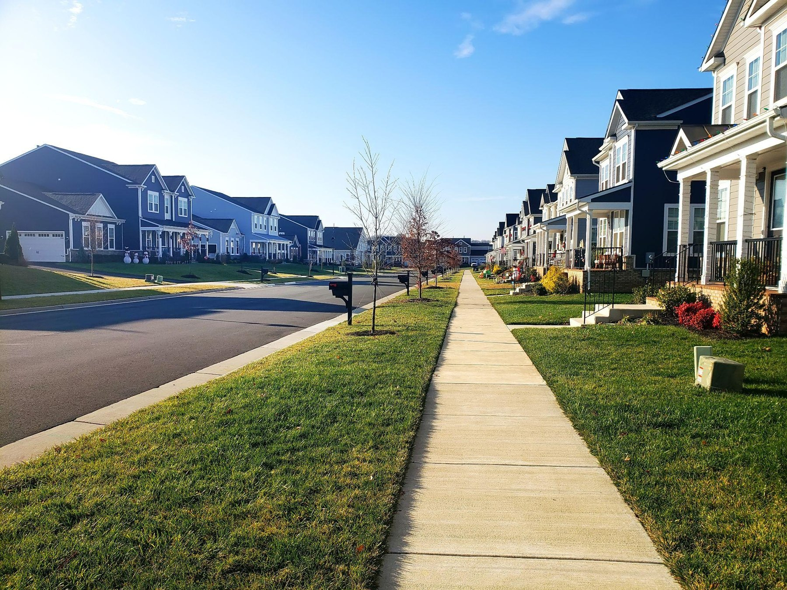
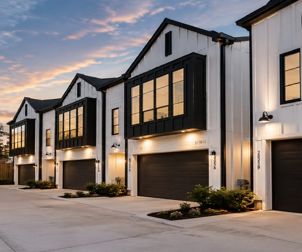

We are a development company specializing in guiding, managing, and developing real-estate projects in Israel, with more than 15 years of experience.
The company provides guidance, coordination, and process-management services only. It does not hold or manage client funds.
Over the years, we have founded and managed companies in the fields of development, planning, marketing, and execution. We have employed, and continue to employ, dozens of construction supervisors directly, worked with hundreds of contractors and professionals, and managed projects totaling hundreds of millions of shekels. At the same time, we are partners of leading business groups and operate ourselves as real-estate developers in large-scale projects.
The core of our activity is guiding and coordinating private ground-up residential construction projects. Over the years, we have accompanied hundreds of families and home buyers and supported the entire process, from locating and acquiring the land, through planning, financing, permitting, execution, and supervision, to delivery, leasing, and property management.
The experience we have accumulated allows us to examine each transaction through its full value chain: purchase price, planning options, construction costs, financing structure, property management, potential rental income, and possible value appreciation over time.
We have never operated only as outside advisors. We have built and managed complete professional systems around projects, both as partners and as managers, in supervision, finance, planning, marketing, execution, and property management. This way of working grew out of the understanding that making the right decisions requires knowing and managing the full picture, not just one part of the process.
The current home-purchase model was built in the same way that has guided us over the years: study the market in depth, operate ourselves, examine each stage of the process, and only then build an organized operating framework around it. For us, this is first and foremost a way of working — not an off-the-shelf product and not a deal created for marketing purposes.
In recent years, against the backdrop of market changes, rising construction costs, and the new interest-rate environment, we asked ourselves a simple question: if we were purchasing a home for ourselves today, where and how would we do it?
We looked for an approach that does not merely look good on paper, but one we personally feel comfortable operating in and staying with over time: a tangible asset, clear ownership, a process we know how to coordinate, and the potential to benefit from value that may be created during development as well as from long-term ownership of the property.
From this examination, we arrived at a home-purchase model based on acquiring land, planning, and constructing new homes in developing Houston neighborhoods, with the goal of creating each home at the right price, designing it in advance for the rental market, and holding it while the neighborhood and surrounding area continue to develop.
In parallel, we invested in building a local professional infrastructure for our Houston activity. We built a network of local partners and professionals that includes contractors, property managers, lenders, brokers, planners, and professional consultants. The goal was to build a real ability to operate on the ground, manage the process continuously, and not depend on remote management. Today, we have shifted the core of our activity to Houston. Our activity there continues to expand, but the strategy remains focused: operate in a market we know, focus on a defined area of activity, deepen our expertise, and build experience, relationships, and professional advantage over time. This is the same worldview that guides our activity in Israel: focus, specialization, long-term relationships, and as much control as possible over the stages of the process.
This document explains the thinking that led us to the home-purchase model, the structure we built around purchasing a specific home and the process, and the points we believe are important to understand before moving forward.
What We Learned Along the Way
Along the way, we examined several operating paths in parallel: development and land acquisition, self-build construction in Israel, the United States, and the Netherlands, development transactions, various ownership and management models, and the purchase of new homes from developers and public builders. Some of these paths became real activity, others are still under review by us, and each helped sharpen the way we want to operate.
The deeper we went, the clearer the central question became: where is the right entry point for a home buyer today? Not only in terms of purchase price, but through a full-picture view: asset type, ownership structure, financing, cash flow, risk management, statutory certainty, level of control over the process, management method, and the flexibility available to the buyer later on.
From this perspective, we focused on developing and building new homes in developing Houston neighborhoods. We found a purchase model that fits the way we know and like to work and allows the buyer to benefit from value that may be created during development while ultimately owning a private, income-producing asset.
In practice, this is a natural continuation of our operating model in Israel over the years. A significant part of our experience was built around land acquisition, planning, and home construction within private development. We believe that entering a transaction at the land and planning stage, benefiting from value that may be created during the development process, and ultimately owning a private, stable, income-producing home can provide a useful combination of potential rental income, possible value appreciation, and the security and flexibility of direct ownership of a tangible long-term asset.

What We Found in Houston
We looked for a market that allows us to connect development activity with long-term ownership of an income-producing asset. Houston offers a combination we believe in: a large and growing metropolitan area, a significant rental market, and a wide range of employment and economic activity centers in energy, medicine, industry, technology, aviation, logistics, and space. In addition, Houston, as part of Texas’s long-standing policy environment, is considered very favorable for landlords. For us, however, choosing Houston is only the first stage. Within such a large metropolitan area, there are significant differences between areas and neighborhoods, so most of our work focuses on choosing the right location within the market.
We focus on established neighborhoods undergoing a real process of change and renewal, in locations with good access to downtown, major transportation routes, and employment centers. We look for areas where the change can already be seen on the ground: new construction entering alongside older housing stock, expanding private investment, and a gradual change in the character of the neighborhood. The goal is to identify the point in time when the change process has already begun and can be seen in practice, but land and home prices still do not, in our view, reflect the full future potential of the area.
So Why Houston?
Our choice of Houston does not rest on a single data point, but on a combination of long-term trends we look for in a market where we want both to develop and to hold assets over time:
- A metropolitan area that continues to expand. The Houston area is experiencing ongoing demographic growth, driven to a significant extent by the arrival of new residents from within the United States and abroad. For the housing market, this means a continuing addition of new households that need housing solutions, both for purchase and for rent.
- A broad and diverse economic base. The local economy has long since ceased to rely only on the energy sector. The Houston metropolitan area concentrates millions of jobs in medicine, industry, energy, logistics, aviation, technology, and space. This diversification is important to us because it creates many employment centers and different sources of housing demand.
- A persistent gap between housing need and the pace of supply creation. For years, the pace of construction in the United States has not fully kept up with the growth in the number of households. In a growing market like Houston, this gap reinforces, in our view, the logic of holding a quality residential asset in an area where the population and economic activity continue to grow.
- A housing market that has shown a positive long-term trend. From a long-term perspective, home prices and rents in the Houston area have shown an upward trend. We do not base the purchase model on an assumption of rapid price increases. Instead, possible long-term value appreciation is considered alongside the property’s potential rental income.
- Real demand for rental homes. Beyond the general data, we also see the market through our activity on the ground. In properties we currently manage, listing a suitable home at the right price generates inquiries and rental applications within a short time. For us, the important figure is not only the rent amount on paper, but the ability to find a suitable tenant and reduce vacancy periods.
- A market suited to a long-term holding strategy. At a time when parts of the U.S. real-estate market are facing a slowdown, Houston continues to benefit from population growth, job creation, and significant housing demand. This combination is one of the reasons we see value in building at the right price and holding the asset after project completion, rather than building a model dependent on immediate sale. Texas is also considered “landlord-friendly” — favorable to property owners in many respects.
Why Did We Choose to Develop and Build New Homes?
In Israel, development and construction have been a central part of our activity for years, and we know well the advantages of entering a transaction at the land and planning stage. When we examined activity in the United States, we wanted to understand whether the same logic applies here as well, and whether there is real justification for going through the development and construction process instead of purchasing an existing, rental-ready asset. As we went deeper, we concluded that the advantage is not only in receiving a new home at the end. For us, value is created throughout the entire path, from land acquisition through planning and execution to receiving a new rental-oriented asset acquired at a cost that reflects the development process, not only the market price of a finished product.
- Control of the asset from the first stage. Instead of purchasing an existing home and dealing with decisions someone else made years ago, we start from the land and design the product according to its purpose. The choice of layout, specifications, finishes, and systems is made with long-term rental, simple maintenance, and durability in mind.
- A new asset with less operational uncertainty. When purchasing an older home, even a professional inspection cannot always anticipate all future expenses. HVAC systems, roofing, electrical, plumbing, and additional components may become significant expenses during the holding period. In a new home, the starting point is different: the systems are new, and the need for significant maintenance in the early years is expected to be lower.
- Warranty and support after construction is completed. The home is built by contractors we select and work with directly. Before delivery, a professional inspection of the property is carried out, any deficiencies are referred to the contractor for correction, and after delivery, the relevant warranty periods apply according to the agreements and coverages applicable to the home.
- A home that is truly rental-ready. For us, completion of construction is not the end of the process. The home is designed and delivered as ready as possible for a tenant to move in, including systems and products required for the property’s ongoing operation. The goal is to minimize the gap between receiving the home and starting the rental period, and to avoid, as much as possible, unexpected additions and expenses after delivery.
- Value may be created throughout the development process. This is one of the key differences in our purchase model. We are not buying a completed home from another developer and adding an intermediary layer. The process starts with acquiring land suitable for several homes and continues through engineering and planning checks, subdivision into lots, planning, permitting, and construction. Concentrating the process and the scale of construction allow us to work with contractors and suppliers more efficiently and benefit from economies of scale.
- An intention to create a gap already at the entry point. The goal is to reach the end of the construction process with a total home cost lower than the price of a comparable new asset in the market. In projects and alternatives we examined, the gap may reach tens of thousands of dollars per home. For us, this is an important component of the purchase model because it may create a layer of value without relying on assumptions about future price appreciation.
- A deliberate choice of areas undergoing change. We focus on established neighborhoods where renewal is already visible in practice: land acquisitions, demolition of old homes, new construction, and gradual change in the residential environment. The goal is not to guess where renewal will begin in the future, but to enter places where the process is already happening and where, in our view, a gap still exists between the current state and the area’s long-term potential.
- An independent asset that allows decision-making flexibility. At the end of the process, the buyer holds a single-family home under direct ownership, not a proportional share in a joint project. This means each asset stands on its own and can, subject to market and financing conditions, be held, rented, sold, or refinanced without dependence on the sale of the other homes in the project.
- The possibility of financing based on the asset’s performance. Subject to lender approval and market conditions at the time the loan is provided, DSCR financing can be explored, where repayment capacity is assessed primarily in relation to the expected rental income from the property. For a foreign buyer, this is a meaningful tool that allows the financing structure to be considered as part of the transaction itself, not only based on personal income.

Why Now?
In recent years, the U.S. real-estate market has gone through a prolonged period of high interest rates and a slowdown in some markets. This environment has affected activity levels, property prices, and land prices, and in our view has created interesting entry points for those able to look beyond the current period and act for the long term.
We do not base the purchase model on a forecast of a sharp and rapid market change, nor on an assumption that interest rates will fall at a certain time. Our perspective is longer: buying at the right price, creating value throughout the development and construction process, and holding a new asset in a neighborhood undergoing development.
We believe that a combination of the housing market gradually returning to more natural activity levels, the possibility of a more favorable interest-rate environment in the future, and continued development of the neighborhoods where we operate may support value appreciation over time. At the same time, our goal is to create part of the value within the development process itself, so that at delivery the buyer receives a new home at the price set within the transaction, which, based on our checks and comparisons, is expected to be attractive relative to purchasing a comparable new asset in the market.
Precisely because the planning, land subdivision, permitting, and construction process takes time, we see an advantage in entering the transaction at an early stage. The buyer locks in the entry terms according to the transaction framework, while during planning and construction the project and neighborhood continue to progress.
In addition, in the purchase model we built, the timing of entry also matters: the longer the initial capital is provided, the greater the benefit the transaction mechanism gives the buyer in the final purchase price. In this way, the time required in any case for planning, permitting, and construction becomes part of the economic advantage of early entry.
Benefit from the development process while purchasing a private asset.
The goal of the purchase model is to connect two elements: the potential advantages of a development process — land acquisition, planning, permitting, and construction at a scale that may create efficiencies — and the simplicity and flexibility of direct ownership of a specific single-family rental home, with potential rental income and possible value appreciation over time.
Each client enters into a separate transaction and purchases a specific home, through the client’s own LLC when appropriate. The client does not purchase a share of the project, does not hold property jointly with other buyers, and does not participate in a pooled or group investment.
The home is held through the buyer’s private entity when appropriate, the relevant account belongs to the buyer, and any financing relates only to that buyer’s home. After the purchase is completed, decisions regarding the future of the asset remain with the buyer. The company provides guidance, coordination, and process-management services only and does not manage client funds.
The buyer can continue to hold and rent the home, explore refinancing in the future, sell when they choose, or continue holding the asset for years. There is no dependence on the decisions of other buyers and no need to wait for the sale of the entire project in order to make a decision regarding a specific home.
Planning and construction may be coordinated at scale, but every buyer completes a separate purchase and owns an independent home, with the freedom to make decisions according to the buyer’s needs and goals.
Our role in the process.
Our value in the process comes from accumulated experience in guiding, coordinating, and overseeing complex processes on the ground. Real-estate transactions almost never succeed or fail because of one detail alone. The result is built from the connection between many components: proper acquisition, planning, due diligence, financing, cash flow, selection of professionals, insurance, timelines, execution, leasing, management, and ongoing communication among all parties involved.
That is where most of our experience lies. Over the years, we have repeatedly had to connect many parts into one process that works, make decisions in real time, solve problems as they arise, and maintain the broad picture without losing the small details.
This is also how we evaluate new opportunities. We prefer to learn the process through real action, commit our own capital, and deal with the challenges in practice before offering guidance to additional home buyers.
Our activity is based largely on personal relationships and referrals, not on a broad external marketing operation. Therefore, the trust built along the way is central to our activity. The goal is to guide and coordinate every process with the same level of involvement and responsibility we apply to our own property purchases: ask the hard questions, examine the numbers in depth, avoid falling in love with a deal, and move forward only when the overall picture justifies it.
Part of our role is also knowing when not to move forward. When the numbers do not work, the location is not suitable, financing terms undermine the economic logic, or we do not have confidence in the professional and managerial framework, we prefer to stop, change direction, or wait for a better opportunity.
This principle is important to us on a personal level as well. In projects where we assist buyers, we also commit our own capital and retain identical or comparable homes. For us, clients are not occasional purchasers of a product, but participants in an activity we are building for the long term. Retaining comparable homes creates, in our view, a clear alignment of interests: we seek for clients the same transaction quality, execution level, and service framework that we require for ourselves.
Capital timing and the discount mechanism.
In the first stage, the client signs an option agreement for the purchase of a specific home and provides an initial amount of approximately $150,000, depending on the project and the specific agreement terms. The option agreement establishes the applicable transaction framework while land acquisition, planning, subdivision, permitting, and pre-construction work move forward. The client exercises the option and completes the home purchase later, in accordance with project progress and the binding agreements. The remaining equity and any long-term financing are generally provided at delivery and final closing, subject to the applicable agreements and financing terms available at that time.
The transaction structure may also include a mechanism under which the period between the initial payment and actual home delivery affects the final purchase price. If the planning, permitting, and construction period is extended, the buyer’s price benefit may increase according to the mechanism stated in the agreement. In practice, the buyer enters the process at an early stage without paying the full home price or beginning a long-term mortgage on a home that is still in planning or construction. At delivery, the buyer exercises the option, completes the separate purchase, arranges any applicable financing, and receives a new rental-ready home.
Time as part of the strategy.
When purchasing a completed home, the buyer completes the purchase, provides the full capital and financing, and may begin renting the property shortly after closing. In our purchase model, the entry point is different. The buyer first signs an option agreement for a specific home while the project advances through planning, subdivision, permitting, and construction. During this period, subject to the transaction documents, the buyer is generally not required to provide the full remaining home price and does not pay a long-term mortgage on a home that is still under construction.
Delivery is expected on average within about one and a half to two years from the date the initial capital is provided. During this period, the project advances, the home is built, and the neighborhood continues to develop. At the same time, according to the mechanism set in advance in the agreement, the more time passes from providing the initial capital to delivery, the greater the benefit in the final purchase price. At the end of the process, the buyer receives a brand-new home at the price set in the transaction, plus the benefit accrued according to the time that has passed.
For us, the time required in any case for planning and construction is part of the strategy. If during this period the housing market strengthens, the interest-rate environment improves, and local renewal continues, the buyer may receive the home from a better starting point than existed when entering the transaction: a new home, at a pre-set price, in an area that continued to develop during the construction period.
That said, we do not base the purchase model on a forecast of price increases or interest-rate declines. Therefore, area selection is also made with a view to existing rental demand. The goal is to build in locations with an active rental market and relatively low vacancy rates, so that even if the market does not develop exactly as we expect, the buyer ends the process with a new home, in an area with rental demand, at an entry price designed to support long-term holding.
End-to-end guidance and coordination.
For us, the value we bring to the client is not limited to identifying a transaction. Our role is to provide guidance, coordination, and process-management services from the earliest stages of land evaluation through home delivery, leasing, and the transition to ongoing property management. We serve as a central point of contact, but we do not manage client funds.
The work begins with locating and evaluating the land and conducting preliminary transaction checks, and continues with work opposite the title company, attorneys, and professional consultants, through planning, parcelization, architecture and engineering, pricing and tenders, engagement with recognized and properly licensed contractors, execution monitoring, and ongoing coordination among all parties involved in the project.
At the same time, we coordinate for the client the required framework around the asset: establishing the appropriate entity, opening a bank account, proper ownership registration, insurance, support in the financing process, home delivery, connection to a property management company, leasing, and ongoing handling of the asset after delivery. The goal is that the buyer will not need to personally manage a complex system of architects, engineers, contractors, attorneys, lenders, banks, title companies, insurance companies, and property managers. We bring all parts of the process under one framework, with management, coordination, and control along the way.
A central part of our work is helping create a clear and organized transaction structure and supporting the protection of the client’s rights through agreements, registrations, collateral, and liens appropriate to each transaction. The goal is to reduce risks arising from poor documentation, lack of coordination, or lack of transparency. The company provides guidance, coordination, and process-management services only and does not hold or manage client funds.
We are on the ground on an ongoing basis and involved in coordinating the process throughout. Our guidance does not end with construction completion or key delivery. We continue alongside the buyer during financing, leasing, and the transition to ongoing property management, based on the view that ownership of the home is a long-term process rather than a transaction that ends on the purchase day.
The same view also guides the way we operate ourselves. As in previous projects, we commit our own capital and retain homes similar to those purchased by our clients. We do not see clients as occasional purchasers of a product, but as participants in an activity we are building for the long term.
The fact that we retain comparable homes creates, in our view, a simple alignment of interests: we seek for clients what we seek for ourselves. Therefore, we examine the land, planning, construction, financing, and future management using the same considerations we apply to our own capital and properties.
Houston, developing neighborhoods, and new homes
The images are embedded as standard site files, so they can be uploaded to GitHub together with the rest of the site assets and replaced in the future as needed.
From delivery to long-term ownership.
Completion of construction is not the end of the process, but the beginning of the next stage in owning the home. Ahead of delivery, we accompany the buyer through the financing and mortgage process, coordinate the required inspections, and support the insurance, closing, and registration process. The goal is to create an orderly and continuous transition from the construction stage to the stage in which the home becomes an income-producing asset.
After delivery, the home may be transferred to a local property management company that works with us on an ongoing basis. A dedicated service framework has been built for our clients, including Hebrew-language support and personal service, with the goal of addressing property needs: marketing the home, finding and selecting a tenant, collecting rent, maintenance, and ongoing handling.
At this stage as well, we continue to support the process. The buyer retains a point of contact that knows the home, the project, and the local professionals and can assist with coordination and problem-solving even after the home is occupied and managed on an ongoing basis. The goal is to create one continuous process: from land and planning, through permitting and construction, to financing, delivery, leasing, management, and long-term ownership.
For us, the relationship with the client does not end with the home purchase. As the activity grows and additional homes and buyers are added, a stronger local service infrastructure may develop, with more experience, purchasing power, relationships, and ability to provide support over time.
How to continue from here.
The first step is to understand the project, location, transaction structure, process stages, and expected timelines. A client who decides to proceed signs an option agreement for the purchase of a specific home and provides the required initial amount according to the transaction terms. The client later exercises the option and completes the separate purchase in accordance with project progress and the binding agreements. From there, we provide guidance and coordination through land, planning, subdivision, permitting, construction, inspections, financing, delivery, and connection to the management and leasing framework.
At the end of the process, after all the complexity along the way, the buyer owns something simple and clear: a specific new single-family home, with separate financing, a separate account, an organized property-management framework, and the freedom to make decisions about the home according to the buyer’s goals.
For us, this is the central story of the activity: provide guidance and coordination through a complex development process so that each client ultimately completes a separate transaction and owns a specific new home that may generate rental income over time.
Ultimately, the reason we chose this path is simple. Among the many alternatives we examined over the years, we found a combination that is right for us: the possibility of benefiting from value that may be created during the development process and ultimately owning a specific single-family home, with potential financing, control over the asset, and an organized long-term property-management framework.
Not because this is a perfect or risk-free purchase model, but because after examining the full picture, it is a process we understand, know how to coordinate, and use for our own home purchases as well.
Pro Forma for a Specific Home Purchase
The pro forma relates to the purchase of one specific home by one buyer. It does not describe a pooled investment, fund, shared ownership arrangement, or the purchase of an interest in a project.
The pro forma file remains an independent PDF accessible from the site. It is not broken into page text in order to preserve the document structure, tables, and original design.
Instead of linking to an external calculator, the page provides direct access to the pro forma example so the buyer can open the document in the browser or download it.